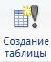
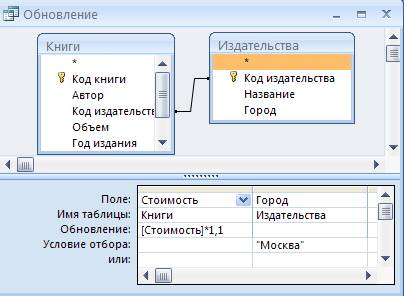
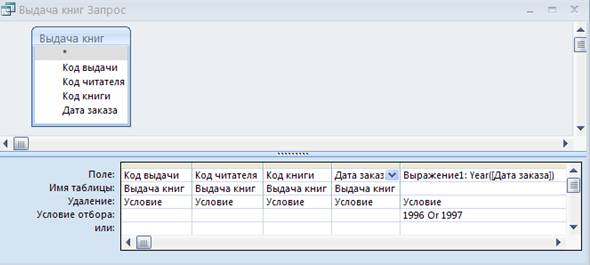
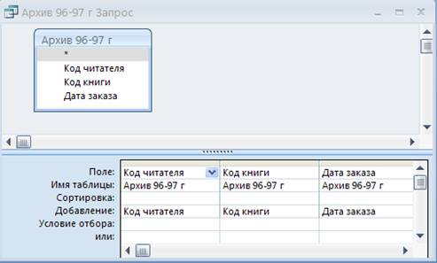

Лабораторная
работа №3
Создание
простых запросов и запросов на изменение
Цель работы: работа с
фильтрами, создание запросов на выборку, условных запросов, запросов на
удаление, обновление, добавление данных, запросов на создание таблиц на основе
учебной БД «Библиотека».
Краткие теоретические сведения
При работе с БД постоянно требуется организовывать просмотр, сортировку, фильтрацию, выборку, поиск данных и вычисление значений как в пределах одной таблицы, так и по всей БД. Например, нужно просмотреть все заказы, сделанные какой-либо фирмой, либо все заказы, сделанные за определенный месяц и т.п. В MS Access поставленные задачи можно решать при помощи фильтров или при помощи запросов.
Фильтры. Фильтры обычно используются при работе с одной таблицей, их преимуществом перед запросами является простота. Кроме того, фильтры не занимают места на диске, в отличие от запросов. Для фильтрации данных в таблицах можно воспользоваться следующими способами:
Поиск данных. Чтобы выполнить простой поиск по одному полю, сначала нужно выделить его, а затем использовать команду меню «Найти». В образце поиска можно использовать подстановочные символы. Символ * (звездочка) заменяет строку любой длины, а символ ? (знак вопроса) – любой произвольный символ.
Фильтр по выделенному. Предположим, нужно выбрать все записи таблицы «Издательства», в которых указан город Москва. Для этого находят одну запись, в которой указан город Москва, устанавливают в эту ячейку курсор мыши и выбирают «Фильтр по выделенному». В результате будут отображены все записи, у которых поле «Город» имеет значение «Москва». Опция «Исключить выделенное» – наоборот, оставит на экране поля, значения которых не совпадают с выделенной записью.
Чтобы отфильтровать записи по значениям в различных полях, используют опцию «Изменить фильтр», которая позволяет сформировать строку с необходимыми значениями с помощью простейших математических и логических операторов. Просмотреть результат работы такого фильтра можно после нажатия на кнопку «Применить фильтр». Для удаления ненужного фильтра используется опция «Очистить (удалить) все фильтры».
Запросы. Одно из преимуществ запросов состоит в том, что они позволяют достаточно быстро отобрать необходимые данные из нескольких связанных таблиц. В общем, запросы полезны и для работы с одной таблицей, и для сложных многотабличных запросов.
В отличие от реальной таблицы набор записей – результат запроса физически не существует в БД. MS Access создает его из данных таблиц только во время выполнения запроса.
Для создания запросов к БД существует специальный язык запросов. Он называется SQL (Structured Query Language – структурированный язык запросов). Но MS Access использует более простое средство, которое называется бланком запроса по образцу. С его помощью можно сформировать запрос простыми приемами, перетаскивая элементы запроса между окнами в Конструкторе запросов.
Все запросы можно разделить на две группы: запросы-выборки, запросы-действия.
Запросы-выборки осуществляют выборку данных из таблиц в соответствии с заданными условиями. К этой группе запросов относятся следующие.
Запрос к связанным таблицам – позволяет производить выборку данных из связанных таблиц.
Условный запрос – позволяет производить отбор записей в соответствии с заданным критерием поиска.
Запрос с вычисляемым полем – позволяет рассчитать данные на основе других полей из той же строки запроса.
Итоговый запрос – производит математические вычисления с помощью встроенных статистических функций и выдает общий результат.
Параметрический запрос – позволяет пользователю задать критерий отбора, введя нужный параметр непосредственно при вызове запроса.
Перекрестный запрос – отображает итоговые данные с группировкой их по горизонтали и вертикали, выводя результаты их обработки в виде таблиц.
Запросы-действия позволяют модифицировать данные в таблицах: удалять, обновлять, добавлять записи. Эти запросы называют еще запросами на изменение и выделяют четыре типа:
Запросы на создание таблицы – создают таблицы на основании данных, содержащихся в результирующем множестве запроса.
Запросы на добавление записей – позволяют добавлять в таблицу записи, создаваемые запросом.
Запросы на обновление – изменяют значения существующих полей в соответствии с заданным критерием.
Запросы на удаление – удаляют записи из одной или нескольких таблиц одновременно.
В MS Access можно создавать запросы при помощи Мастера запросов и с помощью Конструктора.
Для создания запросов при помощи Мастера имеются следующие мастера: Мастер создания простого запроса; Мастер создания перекрестного запроса; Мастер создания запросов на поиск повторяющихся записей; Мастер создания запросов на поиск записей без подчиненных записей.
При создании запроса с помощью Мастера производится пошаговое выполнение действий в диалоговом окне Мастера запросов.
Конструктор запросов позволяет создавать новые и изменять существующие запросы, поэтому он является основным способом.
При создании запросов в режиме Конструктора открывается специальный бланк, называемый бланком запросов по образцу. Этот бланк состоит из двух областей. В верхней части отображаются структуры таблиц, к которым адресован запрос, а нижняя часть представляет собой таблицу описания запроса, которая имеет 5 основных строк. Количество столбцов в запросе определяется количеством выбранных полей, которые будут использованы в запросе.
Назначение строк в бланке Конструктора запросов:
1-я строка – Поле предназначена для ввода имени поля запроса, переименования его названия, создания вычисляемого выражения;
2-я строка – Имя таблицы предназначена для задания имени таблицы – источника данных поля запроса;
3-я строка – Сортировка предназначена для указания порядка сортировки в данном поле. Может принимать следующие значения: по возрастанию, по убыванию, отсутствует;
4-я строка – Вывод на экран содержит флажок, указывающий на то, будут ли выводиться значения поля на экран при просмотре результатов запроса;
5-я строка – Условие отбора содержит критерий, по которому будет происходить отбор записей в результирующую таблицу.
Рассмотрим пример условного запроса с выбором данных из одной таблицы: выберем читателей с фамилией Бобров.
Для этого необходимо выбрать Создание запроса в режиме Конструктора. В появившемся бланке Конструктора из предложенного списка таблиц выбрать Читатели, нажать кнопку «Добавить» и закрыть диалоговое окно выбора таблиц.
Чтобы заполнить бланк конструктора запроса в строке Поле: в первом столбце выбрать поле Фамилия, во втором – Имя, в третьем – Отчество. Строка Имя таблицы: при этом будет заполняться автоматически. Тот же результат можно получить, если последовательно выбирать нужные поля в таблице двойным щелчком мыши.
Далее в первом столбце, в строке Условие отбора: ввести: Like "Бобров". Запрос будет иметь следующий вид (рис. 8):
|
Поле: |
Фамилия |
Имя |
Отчество |
|
Имя таблицы: |
Читатели |
Читатели |
Читатели |
|
Сортировка: |
|
|
|
|
Вывод на экран: |
ü |
ü |
ü |
|
Условие отбора: |
Like "Бобров" |
|
|
|
или: |
|
|
|
Рис. 8. Параметры запроса на выборку
Потом можно закрыть окно Конструктора запроса. Перед закрытием MS Access запросит имя, под которым сохранить запрос. Запросы всегда следует называть в контексте с той информацией, которую они возвращают, поэтому данный запрос можно назвать «Бобров».
Для того чтобы просмотреть
результат работы запроса его либо просто открывают двойным щелчком мыши по
названию запроса, либо выбирают опцию «Открыть» правой кнопкой мыши. В
результате появится окно (рис. 9).
|
|
Фамилия
|
Имя |
Отчество |
|
4 |
Бобров |
Виктор |
Иванович |
|
* |
|
|
|
Рис. 9. Результат выполнения запроса на выборку
Приведем пример выборки данных из нескольких таблиц. Найдем читателей, которые в 1996 г. заказали «Сборник задач» М.И. Сканави. При этом пусть требуется вывести только название книги и фамилию читателя.
Для начала необходимо открыть окно Конструктора запросов и добавить таблицы «Читатели», «Книги», «Выдача книг».
Так как следует организовать выборку по фамилиям читателей, названию книги и дате заказа, то второй шаг - выбрать соответствующие поля в бланк запроса. Далее ввести условие отбора для поля «Название книги» – «Сборник задач», а в условии отбора в поле Дата заказа – оператор Between 1.01.96 Аnd 31.12.96, который организует выборку данных в указанном промежутке значений.
Чтобы скрыть отображение поля Дата заказа, так как оно необходимо только для задания условия отбора, уберем галочку в строке Вывод на экран. Бланк запроса будет иметь следующий вид (рис. 10).
|
Поле: |
Фамилия |
Название |
Дата заказа |
|
Имя таблицы: |
Читатели |
Книги |
Выдача книг |
|
Сортировка: |
|
|
|
|
Вывод на экран: |
ü |
ü |
|
|
Условие отбора: |
|
"Сборник
задач" |
Between #1.01.1996# And #31.12.1996# |
|
или: |
|
|
|
Рис. 10. Многотабличный запрос на выборку
Можно сохранить запрос под именем «Сборник задач в 1996 году» и выполнить его. Результат запроса имеет вид, представленный на рис. 11.
|
|
Фамилия |
Название |
|
4 |
Федосенко |
Сборник
задач |
|
|
Захаров |
Сборник
задач |
|
* |
|
|
Рис. 11. Результат многотабличного запроса на выборку
Вычисления в запросах. Поле, содержимое которого является результатом расчета, основанного на математических операциях с участием значений полей БД, числовых и текстовых литералов, встроенных функций и т.п., называется вычисляемым полем. Вычисляемое поле существует только в результирующей таблице запроса, т.е. в исходных таблицах БД такое поле не создается и данных в существующих полях не изменяет.
Для создания запроса, производящего вычисления в полях, служит тот же бланк запроса Конструктора. Разница только в том, что в одном из столбцов вместо имени поля записывается формула для расчета новых значений поля. В формулу чаще всего входят заключенные в квадратные скобки названия полей БД и знаки математических операций, например, можно создать новое поле:
Сумма продажи: [Цена] * [Количество], где Сумма продажи – это название нового вычисляемого поля запроса, которое указывается вначале строки перед двоеточием, за которым следует непосредственно формула для расчета.
Комбинация клавиш SHIFT+F2 открывает вспомогательное диалоговое окно, которое называется «Область ввода» и предназначено для удобства записи сложных и длинных вычисляемых выражений. Созданное выражение после закрытия окна помещается в бланк запроса.
Вычисляемое поле может выводиться на экран, тогда результаты расчетов будут отображаться в запросе, также вычисляемое поле можно сделать полем сортировки, чтобы не только получать новые результаты, но и анализировать их.
Возможности вычисляемых полей распространяются и на операцию конкатенации (сцепки) нескольких текстовых полей. Поэтому, чтобы вывести, например, Фамилию, Имя и Отчество в одном поле, создают выражение в поле запроса по формуле: ФИО: [Фамилия]& " "&[Имя]& " "&[Отчество]. При этом в строке Имя таблицы необходимо выбрать таблицу «Читатели».
Для построения условий отбора могут применяться пять групп (критериев) условий отбора:
1. Сравнение, используются элементарные математические функции (=, <, >, <=, >=, <>);
2. Принадлежность диапазону, используется оператор Between … and …;
3. Соответствие шаблону, используется оператор Like "шаблон";
4. Принадлежность множеству значений, используется оператор In (список значений через запятые).
5. Проверка на пустые значения, операторы Not Null, Null.
Кроме этого все перечисленные условия могут быть скомбинированы логическими функциями and(и), or(или), NOT (не).
Примеры формирования некоторых условий отбора:
"Москва" OR "Минск" – издательства Москвы или Минска. Такой запрос можно реализовать, используя бланк запроса Конструктора, если ввести в строку Условие отбора:– "Москва", а ниже в строку или: "Минск". Если требуется выбирать из большего количества условий или, то их можно располагать и ниже строки или: столько раз, сколько необходимо.
Not Like "Москва" – все города, кроме Москвы.
Like "С*" – все записи, которые начинаются с буквы С.
>#01.03.98# – начиная с указанной даты;
In ("Бобров"; "Захаров"; "Гуляев") – совпадает хотя бы с одним значением из списка;
Для работы со значениями полей типа дата/время, используют встроенные функции MS Access: Date (), Day(), Month(), Year(), DatePart().
Функция Date () используется без аргументов и возвращает значение текущей даты. Если требуется связать запрос с текущим днем, месяцем, годом, то можно находить значения типа Month(Date()) – месяц от текущей даты.
Функции Day ([имя_поля]), Month ([имя_поля]), Year ([имя_поля]) возвращают для дат, указанных в столбце [имя_поля] целочисленное значение дня, месяца и года.
Функция DatePart ("интервал"; [имя_поля]) – возвращает для указанного поля с типом дата/время целочисленное значение, заданное параметром "интервал". Этот параметр – строковая переменная – может принимать значения: "yyyy" – год, "Q" – квартал, "m" – месяц, "Y" – день года, "D" – день месяца, "w" – день недели, "ww" – неделя года, "h" – часы, "n" – минуты, "s" – секунды.
Например, функция DatePart ("yyyy"; [Дата Заказа]) возвращает год от значений поля Дата заказа, а DatePart ("Q"; Date ()) будет определять и возвращать номер квартала для текущей даты.
Все вышеприведенные функции в бланке Конструктора запроса помещаются либо в строку Поле:, чтобы выделить нужную часть от значений дат, хранящихся в таблицах БД; либо в Условие отбора:, чтобы сравнить часть даты с каким-либо конкретным значением. С помощью функций, рассмотренный выше, многотабличный запрос на выборку можно создать в следующем виде (рис. 12):
|
Поле: |
Фамилия |
Название |
Выражение1: Year ([Дата
заказа]) |
|
Имя таблицы: |
Читатели |
Книги |
Выдача книг |
|
Сортировка: |
|
|
|
|
Вывод на экран: |
ü |
ü |
|
|
Условие отбора: |
|
"Сборник задач" |
1996 |
|
или: |
|
|
|
Рис. 12. Многотабличный запрос на выборку с функцией Year
Запросы на изменение. Позволяют изменять таблицы БД – обновлять, дополнять новыми записями, удалять некоторые записи, а также создавать новые таблицы в БД.
Для создания запросов на изменение в MS Access необходимо открыть Конструктор запросов, как при создании обычного запроса, а затем на панели инструментов Конструктора в разделе Запросы выбрать иконку с нужным типом запроса на изменение (рис. 13).

Рис. 13
Запрос на обновление изменяет значения заданных полей в определенной группе записей одной или нескольких таблиц. Например, Конструктор запроса на обновление: увеличить стоимость московских издательств на 10%, будет выглядеть, как показано на рис. 14.

Рис.14. Запрос на обновление
Запрос на создание таблицы позволяет создать новую таблицу на основании всех либо какой-то части данных имеющихся таблиц. Например, запрос на создание таблицы: создать архивную таблицу, содержащую все записи о выдаче книг за два года, например, 1996 и 1997 год, будет выглядеть, как показано на рис. 15.

Рис. 15. Запрос на создание таблицы
Запрос на удаление удаляет определенную группу записей из одной или нескольких таблиц. С помощью такого запроса можно удалить только всю запись, а не отдельные поля внутри ее. Например, запрос на удаление: удалить все заархивированные записи из таблицы «Выдача книг», будет выглядеть, как показано на рис. 16.

Рис. 16. Запрос на удаление
Запрос на добавление добавляет группу записей из одной таблицы в конец другой таблицы. Запрос полезен для объединения таблиц, хранящихся в разных файлах. Запрос на добавление: восстановить в таблицу «Выдача книг» записи из архива, будет выглядеть, как показано на рис. 17.

Рис. 17. Запрос на добавление
Задание к
лабораторной работе
1. Ознакомиться на практике с возможностями использования фильтров в MS Access. Осуществить выборку читателей по трем начальным буквам фамилии, по имени, по двум различным полям одновременно (например, совпадение цифр телефона и основы отчества).
2. Выполнить и сохранить в БД под контекстным названием следующие условные запросы и запросы на выборку:
-вывести фамилии читателей в алфавитном порядке и домашние телефоны;
-вывести список тем с указанием названия издательства;
-вывести названия и авторов книг издательства «Мир» в алфавитном порядке;
- вывести список книг, имеющих сочетание букв «упр» в названии темы;
- вывести в одном поле фамилию, имя и адрес читателей, заказывавших книги Сканави или Перминова;
- вывести фамилии читателей, не имеющих телефона.
3. Создать и сохранить запросы с использованием встроенных функций обработки даты в поле Дата заказа, которые позволят произвести следующие выборки из нескольких таблиц:
-Информация о заказах на книги за последние 30 дней.
- Все книги, заказанные после 15 числа любого месяца.
- Читатели, сделавшие заказы на книги в 1998 году.
- Читатели, сделавшие заказы на книги в январе 1997 года.
- Читатели, сделавшие заказы на книги в текущем месяце текущего года.
- Читатели, сделавшие заказы на книги в первом квартале 1997 г.
4. Выполнить следующие запросы на изменение:
-изменить фамилию читательницы Семеновой Г.И. на Щербакова Г.И. (запрос на обновление);
-создать таблицу со всеми заказами Гуляева (запрос на создание таблицы);
-удалить все заказы Гуляева из «Выдачи книг» (запрос на удаление);
-восстановить заказы Гуляева за последний год (запрос на добавление);
5. Работа с индивидуальным заданием:
- выполнить заданный в варианте условный запрос (приложение 1);
-самостоятельно разработать задание и создать условные запросы, с использованием встроенных функций обработки данных в поле с типом дата/время (аналогично запросам п.3);
-самостоятельно разработать задание и создать запросы на обновление данных, на создание таблицы, на удаление и добавление данных (аналогично запросам п.4).
Контрольные
вопросы:
1. Что такое запрос?
2. Как создать запрос с помощью конструктора MS Access?
3. Чем отличаются запрос на выборку и условный запрос?
4. Какие запросы относятся к запросам на изменение?
5. Какие функции используют для полей с типом «дата-время»?
6. В чем особенность запросов к данным, содержащим пустые значения?
7. Как создать вычисляемое поле?
8. Как можно реализовать в конструкторе логические функции OR и AND по отношению к одному полю? К нескольким полям?
9. Для чего и как используется функция LIKE?
10. Какие параметры интервалов используются в функции DatePart()? Приведите примеры.